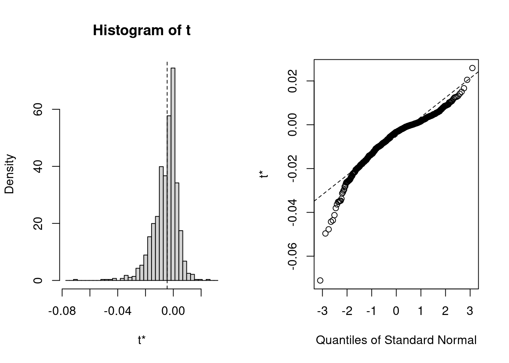
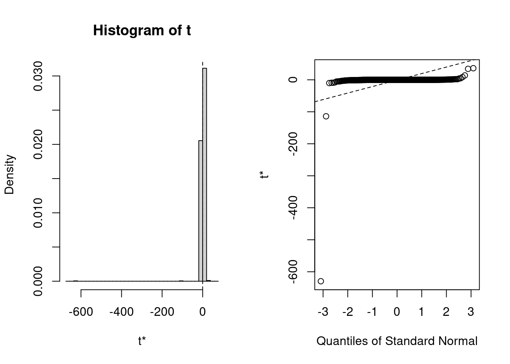

Confidence Intervals for Multilevel Mediation (Draft)
Statistics
Author
Mark Lai
Published
August 25, 2017
The data are from the mediation package, which are simulated data with the source of the Education Longitudinal Study of 2002. For the interest of time as well as to consider situations where asymptotic normality may not hold, I only select 50 schools (out of 568) from the sample.
library(tidyverse)library(lme4)library(mediation)data("school", package ="mediation")# Select only a random sample of 24 schools, stratified by # `coed` and `catholic`set.seed(827)# School-level subsample:school_sub <- school %>%sample_n(size =50) %>%arrange(SCH_ID)school_sub %>%as_data_frame()
Warning: `as_data_frame()` was deprecated in tibble 2.0.0.
ℹ Please use `as_tibble()` (with slightly different semantics) to convert to a
tibble, or `as.data.frame()` to convert to a data frame.
The example is taken from the vignette of the mediation package (p. 19), where a school-level poverty indicator (free, “percent of 10th grade students receiving free lunch” with 7 levels) is hypothesized to cause school-level morale (smorale with 4 levels), which in turn causes student-level tardiness (late, “frequency in which the student was late for school” with 5 levels). For the mediator equation, the school-level covariates are catholic and coed; for the outcome equation, in addition to the school-level covariates, student-level covariates are gender, income, pared.
Quasi-Bayesian/Monte Carlo CI With the mediation Package
The mediate() function provides CI for the indirect effect using Quasi-Bayesian method, which I believe is similar to the Monte Carlo method by assuming normality of the \(a\) path and the \(b\) path. Bootstrapping is not supported when one equation is a multilevel model.
# Using the mediation package# 1. Mediator equationmed_fit <-lm(smorale ~ free + catholic + coed, data = school_sub)# 2. Outcome equationout_fit <-lmer(late ~ free + smorale + catholic + coed + gender + income + pared + (1| SCH_ID), data = student_sub)# Record the time:system.time(med_out <-mediate(med_fit, out_fit, treat ="free", mediator ="smorale",control.value =3, treat.value =4, sims =500))
user system elapsed
2.061 0.020 2.082
summary(med_out) # Summary of mediation analysis
Causal Mediation Analysis
Quasi-Bayesian Confidence Intervals
Mediator Groups:
Outcome Groups: SCH_ID
Output Based on Overall Averages Across Groups
Estimate 95% CI Lower 95% CI Upper p-value
ACME -0.00535 -0.02541 0.01 0.54
ADE 0.05599 -0.00895 0.13 0.08 .
Total Effect 0.05063 -0.01316 0.12 0.13
Prop. Mediated -0.06275 -2.02871 1.35 0.58
---
Signif. codes: 0 '***' 0.001 '**' 0.01 '*' 0.05 '.' 0.1 ' ' 1
Sample Size Used: 804
Simulations: 500
The output gives the “ACME” (average causal mediation effect) estimate, which equals estimator of \(ab\) under a normal model, as well as “ADE” (average direct effect), which equals estimator of \(c'\) under a normal model, and ACME and ADE add up to the “Total Effect”, and the proportion mediated as estimating \(ab / (ab + c')\). The posterior median was used for all the quantities, together with the credible intervals.
One can use the posterior samples (e.g., d0.sim for the posterior samples of the \(a\) path) to compute any derived quantities. However, the posterior samples for the variance components are not available, so one cannot compute standardized coefficients or effect sizes defined using variance components.
Analytical Approaches for CI With the RMediation Package
This approach uses the quantiles of the distribution of \(ab\) when \(a\) and \(b\) are assumed bivariate normal. Therefore, the Quasi-Bayesian/Monte Carlo approach can be viewed as an approximation of it. It is, however, less flexible as it does not provide distributions of other derived quantities (e.g., proportion mediated).
# With RMediationnmtx <-"free"# name of treatment variablenmmed <-"smorale"# name of mediatora <-coef(med_fit)[nmtx] # estimate of a path with name removedva <-vcov(med_fit)[nmtx, nmtx] # sampling variance of a pathb <-fixef(out_fit)[nmmed] # estimate of b path with name removedvb <-vcov(out_fit)[nmmed, nmmed] # sampling variance of b path# Distribution of Product of Coefficients(med_dop <- RMediation::medci(mu.x = a, mu.y = b, type ="dop", se.x =sqrt(va), se.y =sqrt(vb)))
The asymptotic SE for the product of two normal variables, as defined in the RMediation package, is: \[\textit{SE}(\hat a \hat b) = \sqrt{a^2 \textit{SE}^2(b) + b^2 \textit{SE}^2(a) +
2 ab \textit{SE}(a) \textit{SE}(b) r_{\hat a \hat b} +
\textit{SE}^2(a) \textit{SE}^2(b) r_{\hat a \hat b}}\] And we replace \(a\), \(b\), \(\textit{SE}(a)\), \(\textit{SE}(b)\) with the corresponding sample estimates. Note that as we use separate equations to obtain \(\hat a\) and \(\hat b\), the correlation between them, \(r_{\hat a \hat b}\), is assumed zero, so the asymptotic SE is computed as: \[\textit{SE}(\hat a \hat b) = \sqrt{a^2 \textit{SE}^2(b) + b^2 \textit{SE}^2(a)}\] and the Asymptotic symmetric CI is \(\hat a \hat b \pm 1.96 \textit{SE}(\hat a \hat b)\).
# Assuming Asymptotic Normality(med_asym <- RMediation::medci(mu.x = a, mu.y = b, type ="asymp", se.x =sqrt(va), se.y =sqrt(vb)))
All the above approaches involve normality assumptions: the quasi-Bayesian and the distribution of product approaches assume the sampling distribution of \(\hat a\) and \(\hat b\) are jointly normal, whereas the asymptotic CI assumes that the sampling distribution of \(\hat a \hat b\) is normal. In small sample and/or with non-normal data, such assumptions may not hold. That is one of the reasons that resampling methods, in particular the bootstrap, is popular for single-level mediation analysis.
There are many methods to do bootstrapping with multilevel analysis (see Leeden, Meijer, and Busing 2008 for an overview). However, to my knowledge most of them are not directly built in multilevel software, especially for mediation models. A relatively simple bootstrapping method is the case bootstrap, which resample intact clusters with replacement. The advantage is that it basically makes no assumption about the data, such as the specification of the functional form and the distribution of the random effects. Therefore the results should be robust. The drawback, however, is that when the cluster sizes are not balanced, as in our example, it results in bootstrap samples with different level-1 sample sizes. And based on my experience it is generally less efficient and requires a relatively large number of clusters to perform well. Below is my implementation of the case bootstrap for this example, which include the indirect effect and some derived quantities.
library(boot) # load the boot package# Get the unique school IDs as a global variablesch_id <- school_sub$SCH_IDlv1_resample <-function(new_lv2_id, data = student_sub, group_var ="SCH_ID") {# Return a resampled lv-1 data set given an input of cluster values# # Args:# new_lv2_id: A vector (character/numeric) showing the cluster values # to be selected. # data: The lv-1 data set to be resampled. # group_var: A character vector of length 1 indicating the variable name# for cluster ID# Returns:# A data.frame object with the resampled data. group <- data[[group_var]] N <-nrow(data) new_lv1_index <-unlist(lapply(new_lv2_id, function(i) seq_len(N)[group == i])) gp_tab <-table(group, dnn =NULL) gp_length <- gp_tab[as.character(new_lv2_id)]# `new_group` make sure that each resampled cluster get a distinct # cluster ID. new_group <-rep(seq_along(new_lv2_id), gp_length) new_data <- data[new_lv1_index, , drop =FALSE] new_data[group_var] <- new_grouprownames(new_data) <-NULL new_data}ab_resample <-function(data_lv2, i, ...) { new_sch_id <- sch_id[i] med_fit <-lm(smorale ~ free + catholic + coed, data = data_lv2[i, ]) new_stud_dat <-lv1_resample(new_sch_id, ...)# Use `calc.dervis` to skip computing the derivatives and save # some time for each bootstrap replication out_fit <-lmer(late ~ free + smorale + catholic + coed + gender + income + pared + (1| SCH_ID), data = new_stud_dat, control =lmerControl(calc.derivs =FALSE)) a <-unname(coef(med_fit)[nmtx]) b <-unname(fixef(out_fit)[nmmed]) ab <- a * b va <-vcov(med_fit)[nmtx, nmtx] vb <-vcov(out_fit)[nmmed, nmmed]# variance components (for standardizing y): sigma_y <-sigma(out_fit) # level-1 SD tau <-getME(out_fit, "theta") * sigma_y # random intercept SD# c-prime (for getting proportion mediated) c_prime <-unname(fixef(out_fit)[nmtx])c(ab = ab, vab = a^2* vb + b^2* va, ab_stdy = ab /sqrt(tau^2+ sigma_y^2), pm = ab / (ab + c_prime))}
We can plot the bootstrap distributions (Note the non-normality)
plot(med_boo, index = 1L)
The output shows that the indirect effect estimate was biased by 20%, whereas the estimated sampling variance was biased by 95%! (or 28% for standard error bias)
Bootstrap CI
Indirect effect
Generally BCa (bias-corrected and accelerated) and studentized CIs (also called bootstrap-\(t\)) are more accurate G. W. Cheung and Lau (2008). However, the BCa needs the accerlation value (which is used to correct for skewness), which is estimated using the regression estimation here, and to my knowledge its use for multilevel data has not been tested.
The studentized CI requires the use of the sampling variance of the statistic to be bootstrapped, which is why I also computed the asymptotic variance of the indirect effect in each bootstrap replication.
# For (unstandardized) indirect effect(med_bootci <-boot.ci(med_boo, type ="all", index =1:2))
BOOTSTRAP CONFIDENCE INTERVAL CALCULATIONS
Based on 1000 bootstrap replicates
CALL :
boot.ci(boot.out = med_boo, type = "all", index = 1:2)
Intervals :
Level Normal Basic Studentized
95% (-0.0226, 0.0149 ) (-0.0187, 0.0184 ) (-0.0213, 0.0058 )
Level Percentile BCa
95% (-0.0280, 0.0091 ) (-0.0387, 0.0058 )
Calculations and Intervals on Original Scale
As you can see, for the indirect effect estimate, both BCa and studentized CIs gave results that are closer compared to other types of CIs. The BCa was known to sometimes overcorrect for skewness, and in this case it might seem to be pushing the confidence limits to the right.
\(y\)-standardized indirect effect
We also can get study the the indirect effect with \(y\) standardized, referred to as \(ab_{ps}\) in the literature, defined as \[ab_{ps} = \frac{ab}{\sqrt{\tau^2_y + \sigma^2_y}},\] where \(\tau^2_y + \sigma^2_y\) is the total variance of \(y\). \(ab_{ps}\) has the interpretation of:
Every unit increase in \(x\) (treatment variable) results in a change of \(ab_{ps}\) standard deviations in \(y\) through the mediator.
First look at the bootstrap distribution:
plot(med_boo, index = 3L)

It’s easy to get the bootstrap CIs. However, for the \(y\)-standardized indirect effect and the proportion mediated it would be more work to obtain the sampling variance estimates (which can be obtained with the delta method or with other resampling method within each bootstrap sample; the former needs some derivation and may not be very accurate and the latter will increase the computation time by a factor of 100 or more, which is not practical), so I did not request for the studentized CI.
# For y-standardized indirectboot.ci(med_boo, type =c("norm", "basic", "perc", "bca"), index = 3L)
BOOTSTRAP CONFIDENCE INTERVAL CALCULATIONS
Based on 1000 bootstrap replicates
CALL :
boot.ci(boot.out = med_boo, type = c("norm", "basic", "perc",
"bca"), index = 3)
Intervals :
Level Normal Basic
95% (-0.0209, 0.0138 ) (-0.0174, 0.0169 )
Level Percentile BCa
95% (-0.0258, 0.0086 ) (-0.0347, 0.0056 )
Calculations and Intervals on Original Scale
As shown in the result, BCa interval is wider but with higher lower and upper confidence limits. For single-level mediation M. W.-L. Cheung (2009) showed that the percentile and BCa CIs are better than Wald CI and using the PRODCLIN CI macro. It is still an open question how the different bootstrap CIs perform in multilevel mediation.
Proportion mediated
Again, check the bootstrap distribution:
plot(med_boo, index = 4L)

Finally, we can get CIs for proportion mediated:
# For proportion mediatedboot.ci(med_boo, type =c("norm", "basic", "perc", "bca"), index = 4L)
BOOTSTRAP CONFIDENCE INTERVAL CALCULATIONS
Based on 1000 bootstrap replicates
CALL :
boot.ci(boot.out = med_boo, type = c("norm", "basic", "perc",
"bca"), index = 4)
Intervals :
Level Normal Basic
95% (-39.1643, 40.4541 ) ( -0.7092, 1.5193 )
Level Percentile BCa
95% (-1.7082, 0.5202 ) (-9.0233, 0.1396 )
Calculations and Intervals on Original Scale
Some BCa intervals may be unstable
The percentile CI (and to a less degree the basic CI) was close to the one given with the mediation package, whereas the normal bootstrap CI and the BCa CI had much wider intervals. After all, I don’t think proportion mediated would be a good measure of effect size, as also pointed out in Miočević et al. (2017).
Note that I only illustrated case bootstrap in this post. For clustered data, in Davison and Hinkley (1997), it was found that residual bootstrap may result in better coverage. I may implement residual bootstrap for mediation in the R package I am working on, bootmlm.
Fully Bayesian Approach With rstan
Brad Efron said the bootstrap can be an approximation of Bayesian estimation. So we can actually do a fully Bayesian model, which actually is not complicated to fit. It is basically putting a Bayesian multiple regression and a random intercept model together. Given that the scales of the variables are quite similar and generally with SD = 0.5 to 2, I used weakly informative priors with \(N(0, 10^2)\) for the fixed effects and \(t_3(0, 10^2)\) for the random effect standard deviations (i.e., \(\sigma_m\), \(\tau_y\), \(\sigma_y\)).
The Bayesian model here assumes normality in the random effects but not asymptotic normality of the posterior distributions of \(a\) and \(b\) and other parameters.
Below is the STAN code for the multilevel mediation model:
data {
// input for mediator model
int<lower=1> J; // total number of clusters
vector[J] M; // mediator variable (at level-2)
int<lower=1> Kw; // number of effects for the mediator (including intercept)
matrix[J, Kw] W; // level-2 design matrix for the mediator (including intercept)
// input for outcome model
int<lower=1> N; // total number of observations
vector[N] Y; // mediator variable (at level-2)
int<lower=1> Kx; // number of effects for the outcome (including intercept)
matrix[N, Kx] X; // level-1 design matrix for the outcome (including intercept)
int<lower=1> gid[N]; // cluster ID
}
transformed data {
int Kwc = Kw - 1;
int Kxc = Kx - 1;
matrix[J, Kwc] Wc; // centered version of W
matrix[N, Kxc] Xc; // centered version of X
for (i in 2:Kw) {
Wc[, i - 1] = W[, i] - mean(W[, i]);
}
for (i in 2:Kx) {
Xc[, i - 1] = X[, i] - mean(X[, i]);
}
}
parameters {
vector[Kwc] a; // fixed effects for M
vector[Kxc] b; // fixed effects for Y
real temp_b0_m; // intercept for M (with centered predictors)
real temp_b0_y; // intercept for Y (with centered predictors)
real<lower=0> sigma_m; // residual SD for M
real<lower=0> tau_y; // group-level residual SD for Y
real<lower=0> sigma_y; // group-level residual SD for Y
vector[J] z_y; // unscaled group-level effects
}
transformed parameters {
// group-level effects
vector[J] beta_y = tau_y * z_y;
}
model {
vector[J] mu_m = temp_b0_m + Wc * a;
vector[N] mu_y = temp_b0_y + Xc * b;
for (n in 1:N) {
mu_y[n] = mu_y[n] + beta_y[gid[n]]; // group specific effect
}
// prior specifications
a ~ normal(0, 10);
b ~ normal(0, 10);
sigma_m ~ student_t(3, 0, 10);
sigma_y ~ student_t(3, 0, 10);
tau_y ~ student_t(3, 0, 10);
z_y ~ normal(0, 1);
// likelihood contribution
M ~ normal(mu_m, sigma_m);
Y ~ normal(mu_y, sigma_y);
}
generated quantities {
real ab = a[1] * b[2]; // indirect effect
real ab_stdy = ab / sqrt(tau_y^2 + sigma_y^2);
real pm = ab / (ab + b[2]); // proportion mediated
}
numeric_id <-function(id) {# Make group ID to be natural numbers from 1, 2, ..., as needed in the # STAN programmatch(id, unique(id))}med_sdata <-list(J =nrow(school_sub), M = school_sub$smorale, Kw =4, W =cbind(1, school_sub[c("free", "catholic", "coed")]), N =nrow(student_sub), Y = student_sub$late, Kx =8, X =cbind(1, student_sub[c("free", "smorale", "catholic", "coed", "gender", "income", "pared")]), gid =numeric_id(student_sub$SCH_ID))med_stan <-stan("stan_mlm_mediate.stan", data = med_sdata, pars =c("temp_b0_m", "temp_b0_y", "a", "b", "sigma_m", "sigma_y", "tau_y", "ab", "ab_stdy", "pm"))
Posterior (Credible) Intervals
We can get the commonly-used equal-tailed interval or the shorter (but maybe less stable) highest posterior density interval (HPDI).
# Extract the posterior samplespars_post <-as.matrix(med_stan, pars =c("ab", "ab_stdy", "pm"))# Posterior distribution of ab:hist(pars_post[ , 1], xlab ="ab", main ="Posterior distribution of ab")
Warning: `data_frame()` was deprecated in tibble 1.1.0.
ℹ Please use `tibble()` instead.
Method
95% CI
Quasi-Bayesian
(-0.0254, 0.0096)
DOP
(-0.027, 0.011)
Asymptotic
(-0.022, 0.013)
Boot Studentized
(-0.0213, 0.0058)
Boot Percentile
(-0.0280, 0.0091)
Boot BCa
(-0.0387, 0.0058)
Bayesian CI
(-0.028, 0.012)
Bayesian HPDI
(-0.026, 0.014)
The CIs across methods are somewhat similar, with the exception of BCa and studentized bootstrap CIs and the asymptotic CI, with the two bootstrap CIs having wider intervals. Further studies are needed to compare their performance.
Bibliography
Cheung, Gordon W., and Rebecca S. Lau. 2008. “Testing mediation and suppression effects of latent variables.”Organizational Research Methods 11 (2): 296–325. https://doi.org/10.1177/1094428107300343.
Cheung, Mike W-L. 2009. “Comparison of methods for constructing confidence intervals of standardized indirect effects.”Behavior Research Methods 41 (2): 425–38. https://doi.org/10.3758/BRM.41.2.425.
Davison, A. C., and D. V. Hinkley. 1997. Bootstrap methods and their application. Cambridge, UK: Cambridge University Press.
Leeden, Rien van der, Erik Meijer, and Frank M. T. A. Busing. 2008. “Resampling multilevel models.” In Handbook of Multilevel Analysis, edited by Jan de Leeuw and Erik Meijer, 401–33. New York, NY: Springer.
MacKinnon, David P., Chondra M. Lockwood, and Jason Williams. 2004. “Confidence limits for the indirect effect: Distribution of the product and resampling Methods.”Multivariate Behavioral Research 39: 99–128. https://doi.org/10.1207/s15327906mbr3901_4.
Miočević, Milica, Holly P. O’Rourke, David P. MacKinnon, and Hendricks C Brown. 2017. “Statistical properties of four effect-size measures for mediation models.”Behavior Research Methods, March. https://doi.org/10.3758/s13428-017-0870-1.